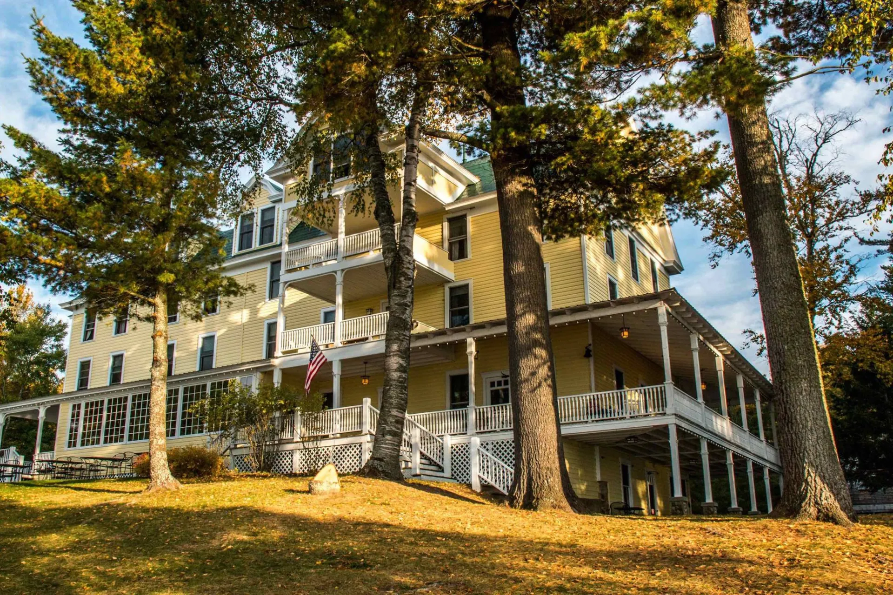

El Hotel Villa Dorada se encuentra situado en los pirineos catalanes, cerca de Vielha, una localización perfecta para los amantes de la naturaleza. Con instalaciones para su equipo de esquí, Villa Dorada está situado entre las estaciones de esquí más importantes del territorio como son Baqueira-Beret y Boí Taüll, haciéndolo un destino idóneo para escapadas en la nieve.
Nuestas instalaciones cuentan con:
Puedes encontrarnos en Turismo Rural
| Habitación | Temporada Baja | Temporada Alta |
|---|---|---|
| Individual | 40€ | 60€ |
| Doble | 50€ | 60€ |
| Triple | 60€ | 80€ |
Haga su reserva Aquí